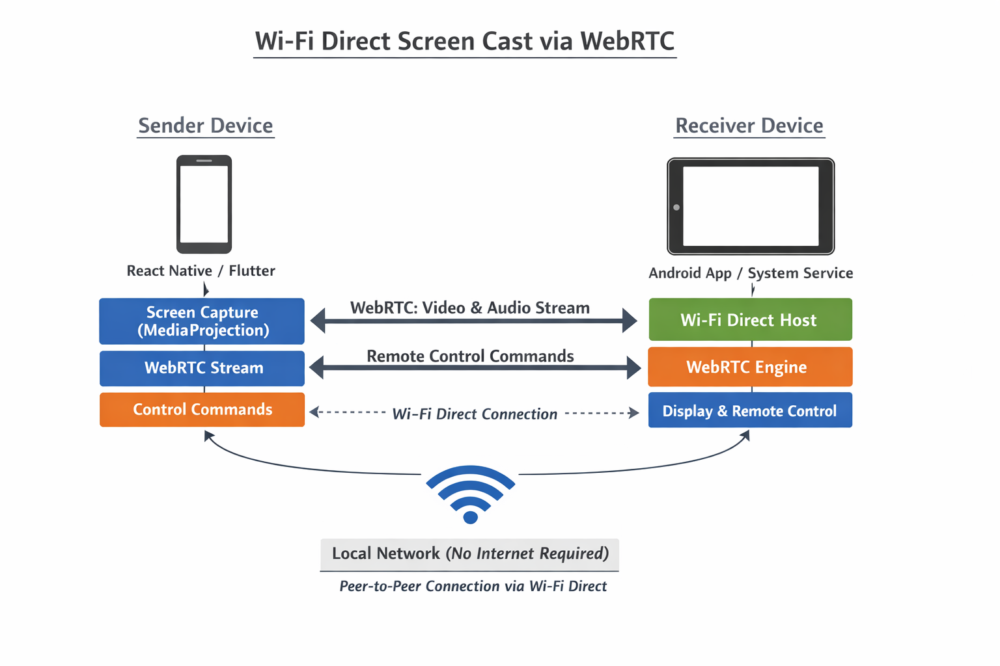
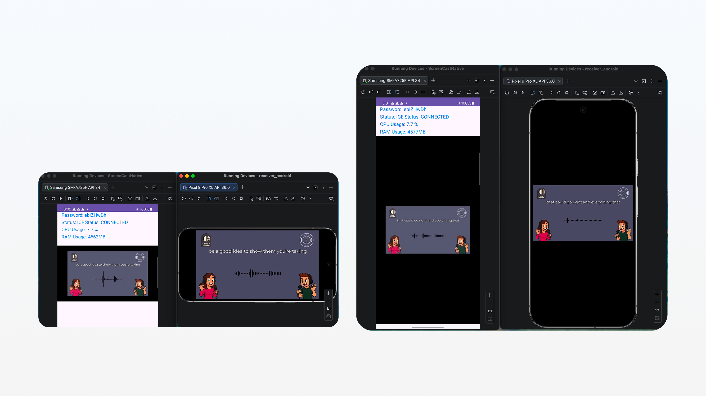

Objectives
- check_circle Main Goals: To provide a zero-lag screen sharing experience that works without traditional network infrastructure.
- check_circle Value for Users: Users can share presentations, movies, or gameplay from their phone to a larger Android-based display or another tablet instantly.
- check_circle Value for Business: Offers a robust foundation for enterprise-level collaboration tools, remote support, and wireless display integrations.
Target Users
- sports_esports Gamers: Mobile gamers wanting to stream their gameplay to a secondary device for recording or viewing.
- school Edu-Tech Professionals: Teachers and students sharing content directly between tablets in classrooms without stable Wi-Fi.
- co_present Corporate Presenters: Business professionals needing to cast slides or mobile apps during meetings in restricted network environments.
Core Features
User Features
-
Real-time Screen Streaming: 1080p/60fps video transmission with minimal latency.
-
Internal Audio Capture: Seamless streaming of system audio (Android 10+ and iOS).
-
Wi-Fi Direct P2P: Direct device-to-device connection (P2P Group Owner mode).
-
Auto-Discovery: Automatic discovery of receiver devices within range.
-
Orientation Awareness: Dynamically adjusts the stream layout.
Admin / Developer
-
Embedded signaling Server: Lightweight WebSocket server integrated into receiver.
-
Connection Monitoring: Real-time stats for bitrate, frame loss, and latency.
-
Encoder Selection: Hardware-accelerated codecs (H.264, VP8, VP9).
System Architecture
Project Casting utilizes a Decentralized Peer-to-Peer Architecture. The Receiver acts as both the Wi-Fi Direct Group Owner (GO) and the Signaling Server.
The Sender connects to the Receiver's Wi-Fi network and initiates a WebSocket handshake.
SDP (Session Description Protocol) and ICE candidates are exchanged to establish a direct WebRTC peer connection.
Encoded video and audio frames are sent over SRTP (Secure Real-time Transport Protocol).
Security & Tech Stack
- WPA2-PSK encryption for P2P via Wi-Fi Direct.
- End-to-end DTLS-SRTP encryption for WebRTC.
- Hardware Acceleration via MediaCodec / VideoToolbox.
- Adaptive Bitrate and Custom Audio Jitter Buffers.
UI & Screenshots
"Single Button Connectivity" philosophy, focusing on clarity and ease of use with a sleek dark mode interface.
Architecture

Devices Communication

Achievements
- Latency: Achieved sub-150ms end-to-end latency on standard consumer hardware.
- Stability: Maintained 60fps streaming for over 4 hours without thermal throttling.
- User Feedback: Beta testers highlighted the ease of connection via Wi-Fi Direct vs. traditional Miracast/Chromecast.
Future Roadmap
- Remote Control (HID): Allow the receiver to control the sender device (touch/keyboard/mouse).
- Multi-Sender Support: Split-screen view for multiple simultaneous casters.
- Recording: High-quality MP4 recording directly on the receiver side.
- Scalability: Expanding support for desktop receivers (Windows/macOS) and web-based viewing.